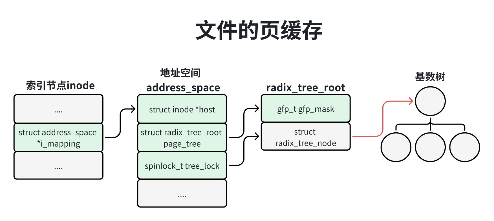
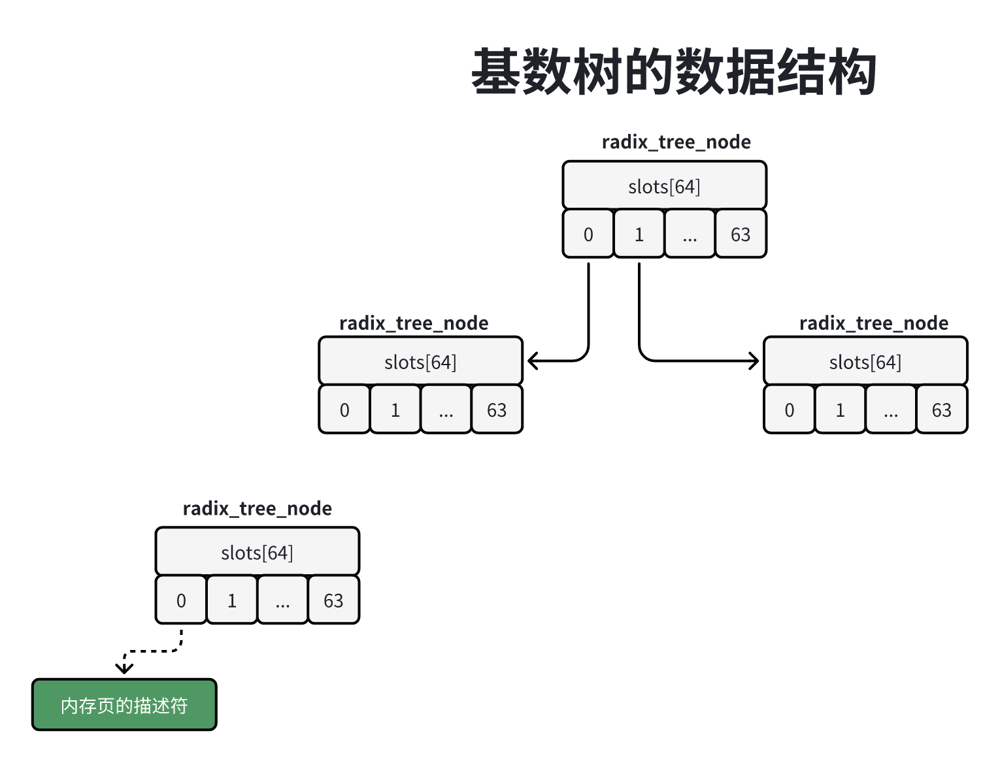
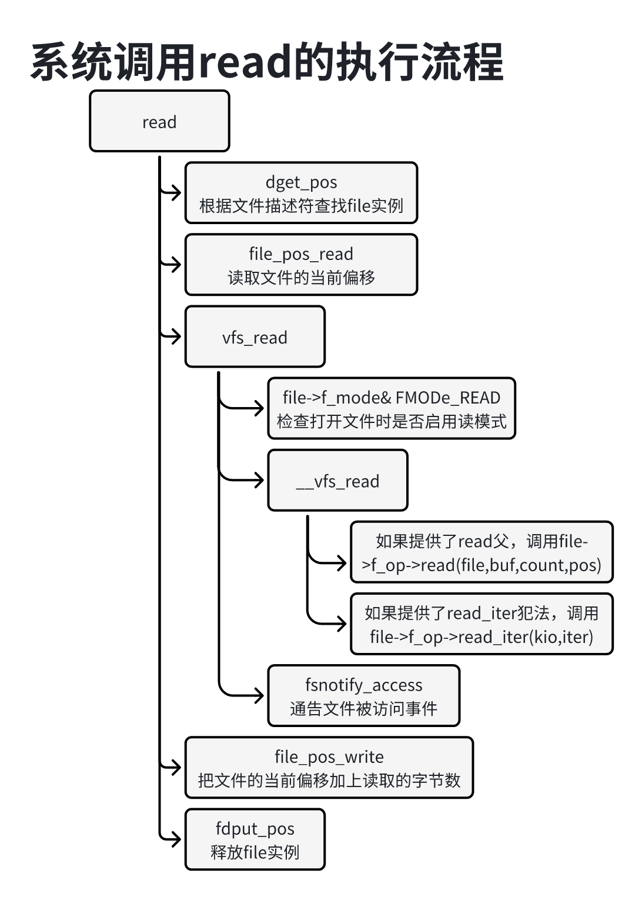
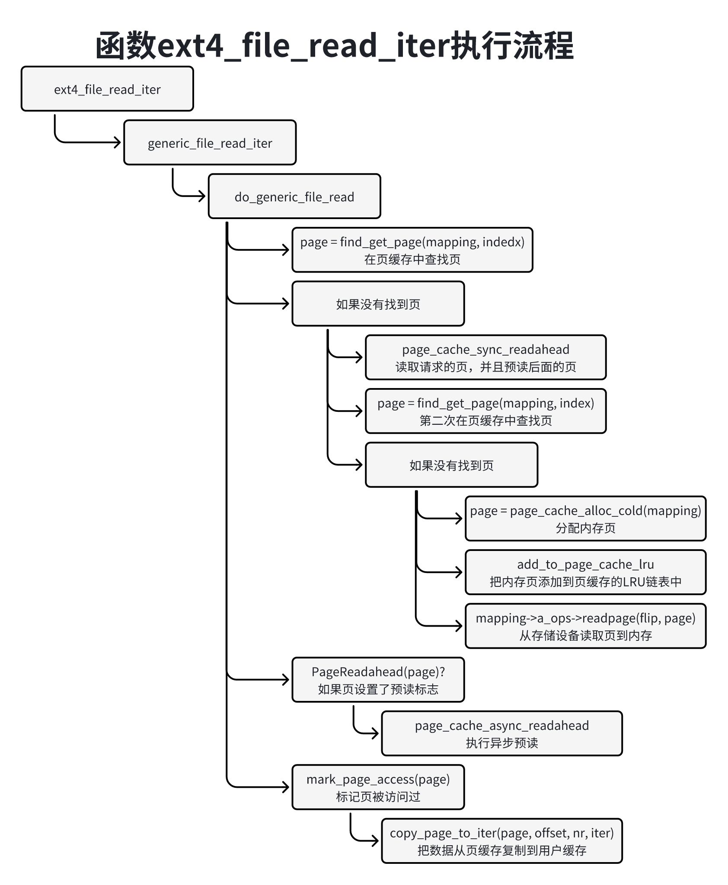
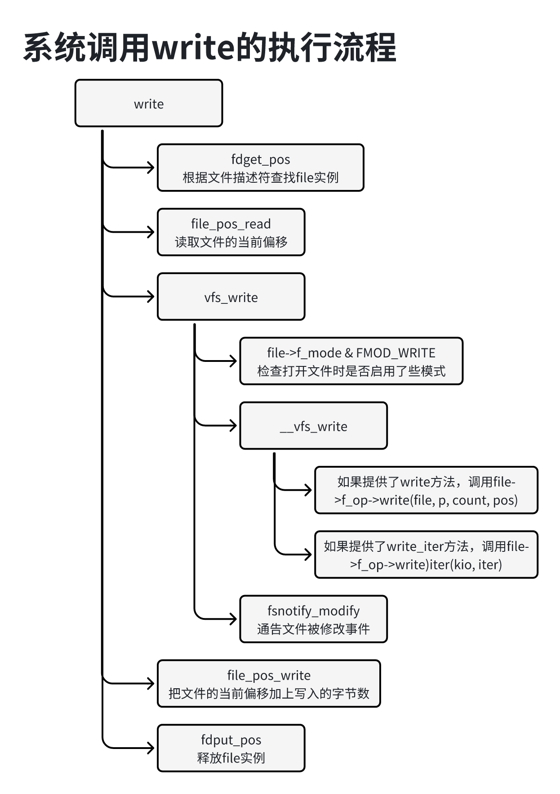
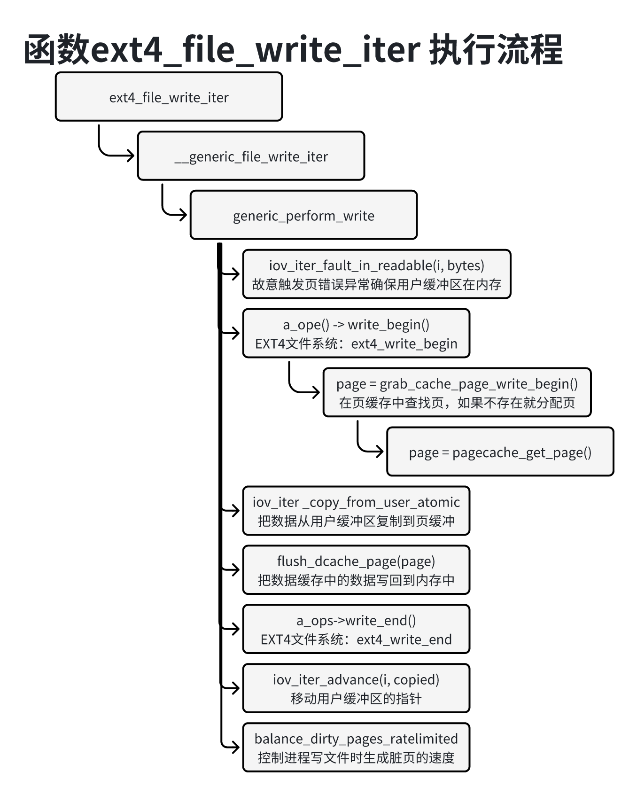
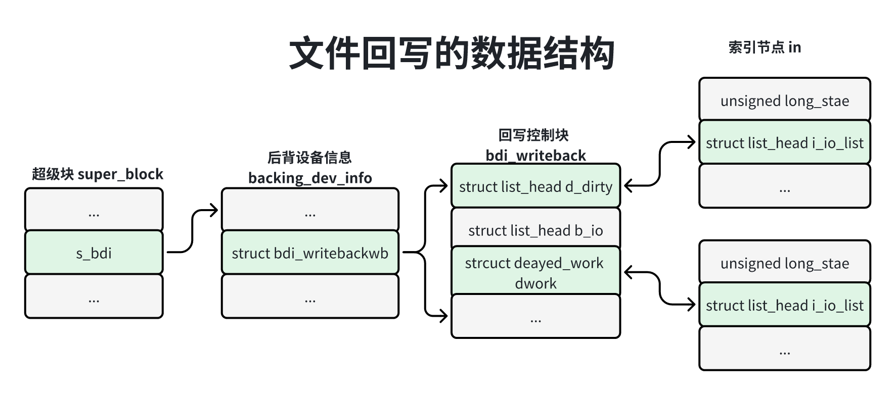
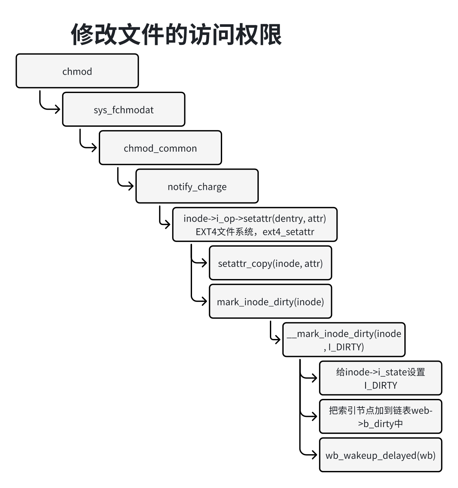
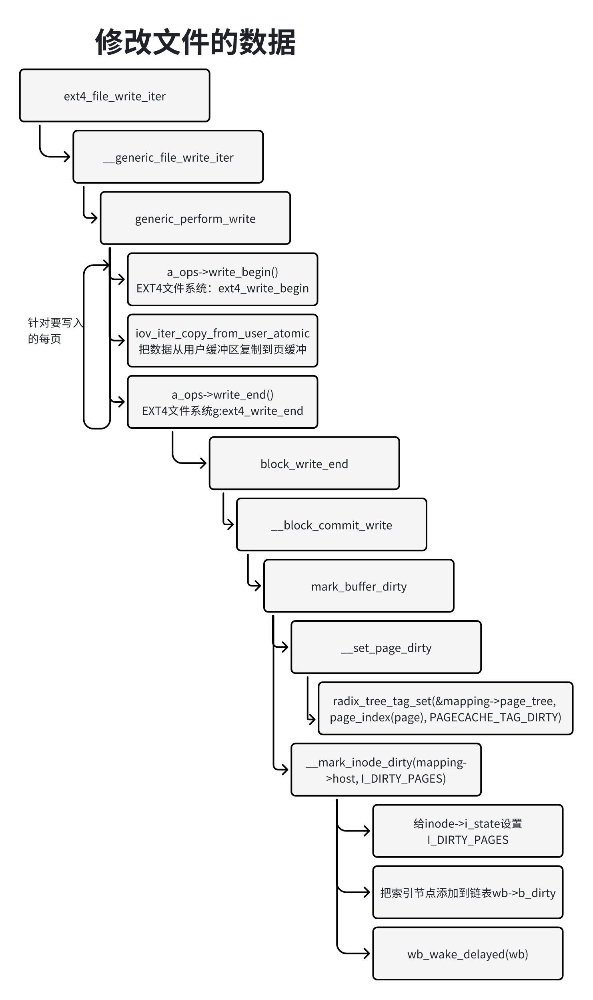
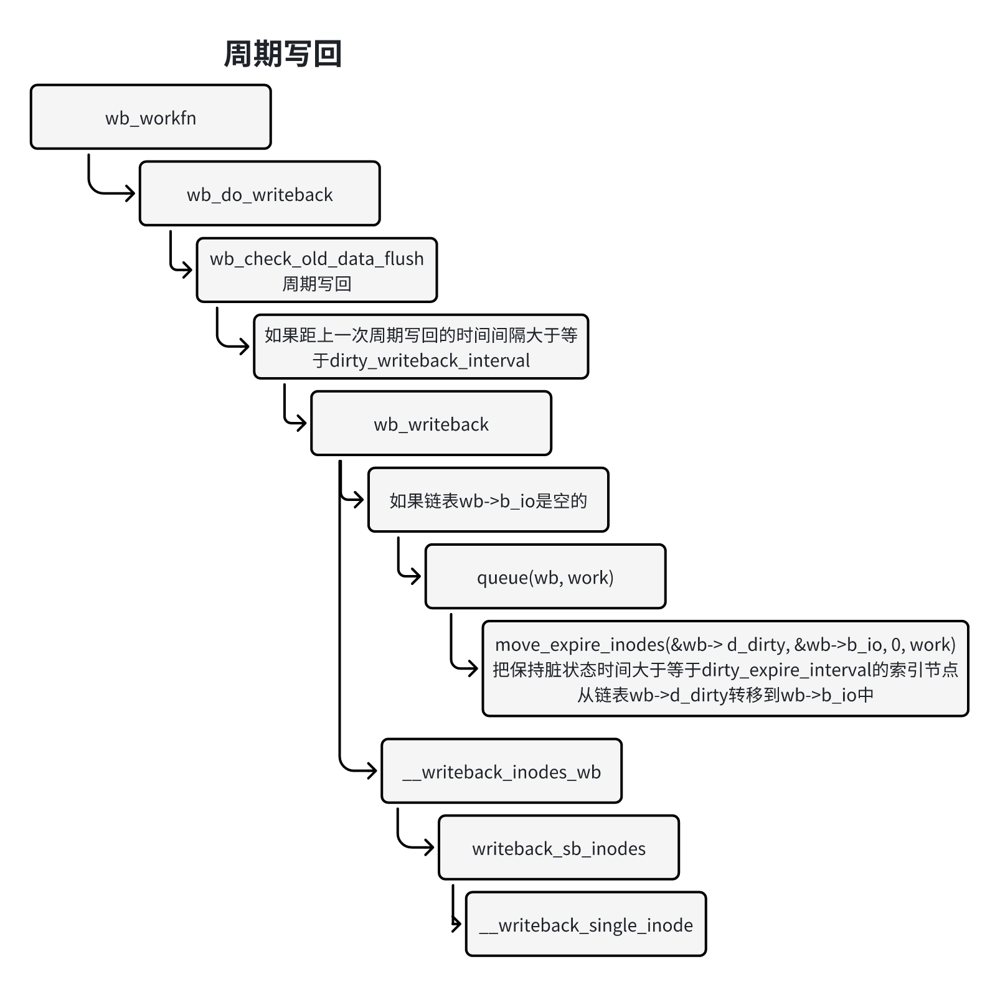

访问外部设备的速度很慢，为了避免每次读写文件时访问外部存储设备，文件系统模块位每个文件在内存中创建一个缓存，因为缓存的单位是页，所以称为页缓存。
文件的也缓存的数据结构如下图所示：

索引节点的成员i_mapping指向地址空间结构体（address_space）。进程在打开文件的时候，文件打开实例（file结构体）的成员f_mapping也会执行文件的地址空间。
每个文件有一个地址空间结构体address_sapace，成员page_tree的类型是结构体radix_tree_root：成员gfp_mask是分配内存的掩码，成员rnode指向基数的根节点。
使用基数树管理页缓存，把文件的也索引映射到内存页的页描述符。
每个文件都有一个地址空间结构体addtess_space，用来建立数据缓存（子啊内存中位某种数据创建的缓存）和数据来源（即存储设备）之间的关联。结构体address_space中和页缓存相关的成员如下：
x1// 位置：include/linux/fs.h2
3struct address_space{4 // 指向索引节点5 struct inode *host;6 // gfp_mask是分配内存的掩码7 struct radix_tree_root page_tree;8 // 用来保护基数树9 spinlock_t tree_lock;10 ...11 // 执行地址空间操作集合12 const struct address_space_operations *a_ops;13 ...14} _attribute__((aligned(sizeof(long))));地址空间操作集合address_space_operations的主要成员如下：
241// 位置：inlcude/linux/fs.h2
3struct address_space_operations {4 // 用来把文件的一页写到存储设备5 int (*writepage)(struct page *page, struct writeback_control *wbc);6 // 用来把文件的一页从存储设备读到内存7 int (*readpage)(struct file *, struct page *);8 // 用来把文件的多个脏页（脏页指的是数据被修改过的页）写到存储设备9 int (*writepages)(struct address_space *, struct writeback_control *);10
11 // 用来给文件的额一页设置脏的标记，表示数据被修改过，=还没有写回到存储设备12 int (*set_page_dirty)(struct page *page);13
14 int (*readpages)(struct file *filp, struct address_space *mapping,15 struct list_head *pages, unsigned nr_pages);16
17 int (*write_begin)(struct file *, struct address_space *mapping,18 loff_t pos, unsigned len, unsigned flags,19 struct page **pagep, void **fsdata);20 int (*write_end)(struct file *, struct address_space *mapping,21 loff_t pos, unsigned len, unsigned copied,22 struct page *page, void *fsdata);23 ...24};写文件的时候针对每一页，首先调用方法是write_begin，在页缓存中查找和创建页，以及执行具体文件系统类型也定的操作，然后把手护具从与用户缓存区复制到页缓存的页中，最后大勇方法write_end来执行具体文件系统类型特定的操作。
基数树（radix tree）是n叉树，内核为n提供了两种选择：16或64取决于宏CONFIG_BASE_SMALL（表示下的内核数据结构）因为配置宏CONFIG_BASE_SMALL默认关闭，所以默认的基数树是64叉树。
151// 位置：include/linux/radix-tree.h2
3
7// 位置：init/kconfig8config BASE_SMALL9 int 10 default 0 if BASE_FULL11 default if !BASE_FULL12 13config BASE_FULL14 default y15 bool "Enable fulliszied data structres for core" if EXPERT基数树的数据结构如下图所示，节点的数据类型是结构体radix_tree_node有64个插槽，中间节点的每个插槽要么是空指针，要么指向下一层节点的结构体radix_tree_node；叶子节点的乜咯插槽要么是空指针，要么执行一个内存页的页描述符（page结构体）。

在64位内核中，文件的页索引的长度是64位，基数树的每层匹配索引的6位，基数树的深度是11层，根节点是第一层，第一层匹配页索引的59~64位，第二层匹配索引的使53~58位，第三层陪陪页索引的47~52位，依次类推。
页缓存的常用操作函数如下：
函数find_get_page根据文件的页索引在页缓存中茶轴内存页：
11struct page *fiind_get_page(struct address_space *mapping, pgoff_t offset);函数find_or_create_page根据文件的页索引在页缓存中查找内存页，如果没有找到内存页，那么分配一个内存页，然后添加到页缓存中。
21struct page *find_or_create_page(struct address_space *maping, pgoff_t offset, 2 gfp_t gfp_mask);函数and_to_page_cache_lru把一个内存页添加到页缓存和LRU链表中。
21int add_to_page_cache_lru(struct page *page, struct address_space *mapping, 2 pgoff_t offset , gfp_t gfp_mask);函数delete_from_page_cache从页缓存中删除一个内存页。
11void delete_from_page_cache(struct page *page);进程读文件的方式有3种：
1、调用内核提供的额杜文杰爱你的系统调用。
2、调用glibc库封装的读文件的标注IO流函数。
3、创建基于文件的内存映射，帮我文件的一个区域映射到进程的虚拟地址空间，然后直接读到内存。
第2种方式用户空间创建了缓冲区，能减少系统的调用次数，提高性能，第3中方式可以避免系统调用性能最高。
内核提供了下面的这些的读文件的系统调用：
1、系统调用read从文件的当前偏移读文件，把数据存放在一个缓冲区。
11ssize_t read64(int fd, void *buf, size_t count, off_t offset);2、系统调用pread64从指定偏移开始读文件。
11ssize_t paread64(int fd, void *buf, size_t count, off_t offset);3、系统调用readv从文件到当前偏移读文件，把数据存放在多个分散的缓冲区。
11ssize_t readv(int fd, const struct iovec *iov, int iovcnt);4、系统调用preeadv从指定偏移文件读文件，把数据存放在多个分散区。
11ssize_t preadv(int fd, const struct iovec *iov, int iovcnt, offt_offset);5、系统调用preadv2在系统调用preadv的基础上增加了参数”int flags“。
11ssize_t preadv2(int fd, const struct iovec *iov, int iovcnt, off_t offset, int flags);其中preadv和preadv2是Linux内核私有的系统调用。
对于除了pread64以外的系统调用，glibc库封装了同名的库函数。针对系统调用pread64，glibc库封装的函数是pread，原型如下：
11ssize_t pread(int fd, void *buf, size_t count, off_t offset);glibc库还封装了一个读文件的标准IO流函数：
11size_t fread(void *ptr, size_t size, size_t nmemb, FILE *stream);
使用基于文件的内存映射读文件的方法如下所示，把文件从偏移的offset开始、长度为len字节的区间映射到进程的虚拟地址空间，偏移offset必须是也长度的整数倍。
161int fd, i;2char *addr;3
4fd = open("/a/b.txt", O_RDWR);5if(fd < 0) {6 exit(EXIT_FAILURE);7}8
9addr = mmap(NULL, len, PROT_READ | PROT_WRITE. MAP_SHARED, fd, offset);10if(addr == MAP_FAILED) {11 exit(EXIT_FAILURE);12}13
14for(i = 0; i < len; i++){15 printf("%C", *(addr + i));16}读文件的主要步骤如下：
1、调用具体文件系统类型提供的文件操作集合的read或read_iter方法来读文件。
2、read或read_iter方法根据页索引在文件的也缓存中查找页，如果没有找到，那么调用具体文件系统类型提供的地址空间操作集合的readpage方法从存储设备读取文件页的内存中。
为了提高读文件的速度，从存储设备读取文件页的内存中的时候，除了读取请求的文件页，还会预读后面的文件页。如果进程按顺序读文件，预读文件页可以提高读文件的速度；如果进程随机读文件，预读文件页对提高读文件的速度帮助不大。
常用的读文件系统调用是read，定义如下：
31// 位置：fs/read_write.c2
3SYSCALL_DEFINE3(read, unsigned int , fd, char __user *, size_t count);系统调用read的执行流程如下图所示：

调用函数fdget_pos，根据文件描述符在当前进程的打开文件表中查找文件的打开实例：file结构体。
调用函数file_pos_read，从文件的打开实例读取文件的当前偏移。
调用函数vfs_read读文件。
检查打开文件时是否启用了读模式，如果没有启用读模式，那么不允许读文件。
如果具体文件系统类型提供了文件操作集合的read方法，那么调用read方法读文件。
如果具体文件系统类型提供了文件操作集合的read_iter方法，那么调用read_iter方法读文件。
调用函数fsnotify_access，通告文件被访问事件。
调用函数file_ops_write把文件的当前偏移加上读取的字节数。
调用函数fdput_pos，释放文件的打开实例。
read方法和read_iter方法的区别是read泛智能传入一个连续的缓冲区，read_iter方法可以传入多个分散的缓冲区。
以EXT4文件系统为例，它提供了文件操作集合的read_iter方法。
71// 位置：fs/ext4/file.c2
3const struct file_ooperations ext4_file_operations = {4 ...5 .read_iter = ext4_file_iter,6 ...7};函数ext4_file_read_iter调用通用的读文件函数generic_file_read_iter执行流程如下图所示，针对请求的每一页，执行下面的操作。

调用函数find_get_page，根据页索引在文件的额页缓存查找页。
如果没有找到页执行下面的操作：
调用函数page_cache_sync_readahead从存储设备读取请求的页，并且预读后面的页。
假设请求读第0页，同时预读第1页、第2页和第3页，会预读的第一页设置预读标志。
第二次根据页索引在文件的也缓存中查找页。
如果没有找到页，执行下面的操作：
分配内存页。
把内存页添加到页缓存和LRU链表中。
调用文件的地址空间操作集合的readpage方法，从存储设备读取页的内存。
如果为页设置了预读标记，说明这一页时读取前一页的时候预读到内存的，那么调用函数page_cache_async_readahead继续预读后面的页，使用异步模式，不等待读操作结束。
调用函数mark_page_accessed以标记页被访问过。
调用函数copu_page_to_iter把数据从页缓存复制到用户缓冲区。
进程写文件有3种方式：
1、调用内核提供的写文件的系统调用。
2、调用glibc库防撞垫额写文件的标准IO流函数。
3、创建基于文件的内存映射，把文件的一个区间映射到进程的虚拟地址空间，然后直接写内存。
第2种方式在用户创建了缓冲区，能够减少系统调用的次数，提高性能，第3中方式key以避免系统调用，性能最高。
内核提供了下面的这些写文件的系统调用：
函数write从文件的额当前偏移写文件，调用进程把药写入的数据存放在一个缓冲区。
11ssize_t write(int fd, const void *buf, size_t count, off_t offset);函数pwrite64从指定偏移开始写文件。
11ssize_t pwwrite64(int fd, const void *buf, size_t conunt , off_t offset);函数write从文件的当前偏移一些文件，调用进程药写入的数据存放子啊多个分散的缓冲区。
11ssize_t writev(int fd, consst struct iovec, *iov, int iovcnt);函数pwritev从指定偏移开始写文件，调用进程把要写入的数据存放在多个分散的缓冲区。
11ssize_t pwritev(int fd, const struct iovec (iov, int iovcnt, off_t offset));函数pwritev2在函数pwritev的基础上增加了参数”int flags“。
11ssize_t pwritev2(int fd, const struct iovec *iov, int iovcnt, off_t, inf flags);其中pwritev和pwritev2是Linux啮合已有的系统调用。
对于除了pwrite64以外的系统调用，glibc库封装了同名的库函数。针对系统调用pwrite64，glibc库封装的函数是pwrite，原型如下：
11ssize_t pwrite(int fd, const void *buf. size_t count, off_t offset);glibc库还封装了一个写文件的标准IO流函数：
11size_t fwrite(const *ptr, size_t size, size_t nmemb, FILE *stream);使用基于文件的内存映射写文件的方法如下所以，把文件从偏移offset开始、长度为len字节的区间映射到进程的虚拟地址空间，偏移offset必须是页长度的整数倍。
161int fd, i;2char *addrl3 4fd = open("/a/b.txt", O_RDWR);5if(fd < 0){6 exit(EXIT_FAILURE);7}8
9addr = mmap(NULL, len. PROT_READ | PROT_WRITE, MAP_SHARED, fd, offset);10if(addr == MAP_FAILED) {11 exit(EXIT_FAILURE);12}13
14for(i = 0; i < len; i++){15 *(addr +i) = 'a';16}写文件的额主要步骤如下。
1、调用具体文件系统类型提供的文件操作集合的write或write_iter方法来写文件。
2、write或write_iter方法调用文件的地址空间操作集合的write_begin方法，在衣蛾缓存中查找页，如果页不存在，那么分配页；然后把数据从用户缓冲区复制到页缓存的也中；最后调用文件的地址空间操作集合的write_end方法。
常用的写文件系统调用是write定义如下：
31// 位置：fs/read_write.c2
3SYSCALL_DEFINE3(write, unsigned int, fd, const chat __user *, buf, size, count)系统调用write的执行流程如下图所示：

调用函数fdget_pos，根据文件描述符在当前金诚达额打开文件表中查找文件的打开实例：file结构体。
调用函数file_pos_read，从文件的打开实例读取文件的当前偏移。
调用函数vfs_write写文件。
检查打开文件是否启用了写模式，如果没有启用写模式，那么不允许写文件。
如果具体文件系统类型提供了文件操作集合的write方法，那么调用write方法写文件。
如果具体文件系统类型提供了文件操作集合的write_iter方法，那么调用write_iter方法写文件。
大勇函数fsnotify_modify，通告文件被修改事件。
调用函数file_pos_write把文件的当前偏移加上写入的字节数。
调用函数fdput_pos，释放文件的打开实例。
write方法和write_iter方法的区别是：write方法智能传入一个连续的缓冲区，write_iter方法可以传入多个分散的缓冲区。
以EXT4文件系统为例，它提供了文件操作集合的write_iter方法。
71// 位置：fs.ext4/file.c2
3const struct file_operations ext4_file_operations = {4 ...5 .write_iter = ext4_file_write)iter,6 ...7};函数ext4_file_write_iter调用通用的写文件函数__generic_file_write_iter执行流程如下图所示：

调用函数iov_iter_fault_in_readable，故意触发页错误异常，确保用户缓冲区的当前页在内存中。如果页被换出到交换区，那么爱触发页错误异常，把页换入到内存中。
调用文锦渡额地址空间操作集合的write_begin方法，EXT4文件系统提供的write_begin方法是函数恶心t-write_begin，在页缓存中查找页，如果页不存在，那么分配页。
调用函数iov_iter_copy_from_user_atomic，把数据从用户缓冲区复制到页缓存的页。
调用函数flush_dacache_papge把数据缓存中的数据写回到内存中。上一步把数据从用户复制到缓存，数据可能在处理器的数据缓存中，如果数据缓存使用虚拟地址生成索引，可能存在缓存别名的问题。
大勇文件的地址空间操作集合的write_end方法，EXT4文件系统提供的write_end方法是函数ext4_write_end在向页缓存中写入一页以后执行特定的操作。
调用函数iov_iter_advace把指针移到已再次亚培写入的数据的其实位置。
调用函数balance_dirty_pages_ratelimited，控制进程写文件时生成脏页的速度。
进程写文件时，啮合的文件系统模块把数据写到文件的页缓存，没有立即写回到存储设备。文件系统模块会定期把脏页（即数据被修改成的文件页）写回到存储设备，进程也可以调用系统调用脏页强制写回到存储设备。
管理员可以执行命令”sync“把内存中所有修改的过的问价元数据和文件数据写回到内存设备。
内核提供聊天下面这些吧文件同步到存储设备的系统调用：
sync把没存中所修改的过得物文件元数据和文件数据写回到存储设备。
11void sync(void);syncfs把文件描述符fd引用的文件修改过的元数据和数据写回到存储设备。
11int syncfs(int fd);fsync把文件描述符fd引用的文件修改过的元数据和数据写回到存储设备。
11int fsuync(int fd);fdatasync把文件描述符fd引用的文件修改或的数据写回到存储设备，还会把检索这些数据需要的元数据写回到存储设备。
11int fdatasync(int fd);Linux私有的系统调用sync_file_range把俄文见得一个区间修改过的额数据写回到存储设备。
11int sync_file_range(int fd, off64_t offset, off64_t nbytes, unsigned int flags);
glibc可针对这些系统调用封装了同名的库函数，还封装了一个把数据从用户空间缓冲区写到内核的标准IO流函数。
11int fflush(FILE *stream);把文件写回到存储设备的时机如下：
1、周期写回。
2、当脏页的数据达到限制的时候，强制写回。
3、进程调用sync和syncfs等系统调用。
文回写到数据结构如下所示：

挂载存储设备上的文件系统时，具体文件系统类型提供的mount方法从存储设备读取超级块，子啊内存中创建块的副本，把超级块关联到描述存储设备西悉尼的结构体backing_dev_info。结构体backing_dev_info的主要成员如下：
81// 位置：inlcude/linux/backing-dev-defs.h2
3struct backing_dev_info{4 struct list_head bdi_list;5 ...6 struct bdi_writeback wb;7 ...8};成员bdi_list用来把所有的backing_dev_info实例链接到全局链表bdi_list。
结构体backing_dev_info有一个类型为bdi_writeback的成员wb，结构体bdi_writeback是回写控制块，主要成员如下：
141// 位置：include/linux/backing-dev-defs.h2
3struct bdi_writeback{4 ...5 // 用来存放该文件系统中所有数据或属性被修改过的索引节点6 struct list_head b_dirty;7 // 用来存放写回的设备的索引节点8 struct list_head b_io;9 ...10 // 是一个延迟工作项，处理函数是文件”fs/fs-writeback.c“中定义的函数11 // wb_workfn它负责把该文件系统中的脏页写回到后备存储设备12 struct delayed_work dwork;13 ...14};内核创建了一个名为writeback的工作队列，专门负责把文件写回到存储设备，称为回写工作队列。全局变量bdi_wq指向回写工作队列。
101// 位置：mm/backing-dev.c2
3struct workqueue_struct *bdi_wq;4static int __init default_bdi_init(void)5{6 ...7 bdi_wq = alloc_workqueue("writeback", WQ_MEM_RECLAIM | WQ_FREEZABLE |8 WQ_UNBOUND | WQ_SYSFS, 0);9 ...10}把回写控制块中的延迟工作项添加到回写工作队列的时机是:修改文件的属性或数据。
修改文件的属性，以调用 chmod 修改文件的访问权限为例，假设文件属于 EXT4 文件系统，执行流程下图所示。系统调用 chmod 调用 EXT4 文件系统提供的索引节点操作集合的 setattr 方法:函数 ext4_setattr。函数 ext4_setattr 的执行过程如下。

调用函数 setattr_copy，把访问权限保存到索引节点。
给索引节点的字段i_state设置I_DIRTY。I_DIRTY是标志位组合(I_DIRTY_SYNC |I_DIRTY_DATASYNC | I_DIRTY_PAGES)，I_DIRTY_SYNC 表示文件的属性变化(系统调 用 fdatasync 不需要同步)，I_DIRTY_DATASYNC 表示检索数据需要的属性变化(系统调 用fdatasync需要同步)，I_DIRTY_PAGES表示文件有脏页，即文件的数据有变化。
把索引节点添加到回写控制块的链表 b_dirty 中。
调用函数 wb_wakeup_delayed，把回写控制块的延迟工作项添加到回写工作队列。
以调用write写EXT4稳健性系统的一个文件为例，如下图所示，系统调用write调用EXT4文件系统提供了文件操作集合的write_iter方法：函数我ext4_write_iter。

调用函数 iov_iter_copy_from_user_atomic 把一页数据从用户缓冲区复制到页缓存以后，调用 EXT4 文件系统提供的地址空间操作集合的 write_end 方法:函数 ext4_write_end。函 数 ext4_write_end 的执行过程如下。
1、调用函数__set_page_dirty，在页缓存中给页设置脏标记。
2、给索引节点的字段 i_state 设置标志位 I_DIRTY_PAGES，表示文件有脏页，即文 件的数据有变化。
3、把索引节点添加到回写控制块的链表 b_dirty 中。
4、调用函数 wb_wakeup_delayed，把回写控制块的延迟工作项添加到回写工作队列。
函数 wb_wakeup_delayed 把回写控制块的延迟工作项添加到回写工作队列，超时是周 期回写的时间间隔。
121// 位置：mm/backing-dev.c2
3void wb_wakeup_delayed(struct bdi_writeback *wb)4{5 unsigned long timeout;6
7 timeout = msecs_to_jiffies(dirty_writeback_interval * 10);8 spin_lock_bh(&wb->work_lock);9 if (test_bit(WB_registered, &wb->state))10 queue_delayed_work(bdi_wq, &wb->dwork, timeout);11 spin_unlock_bh(&wb->work_lock);12}周期回写的时间间隔是 5 秒，管理员可以通过文件“/proc/sys/vm/dirty_writeback_ centisecs”来配置，单位是厘秒，即百分之秒。
21// 位置：mm/page-writeback.c2unsigned int dirty_writeback_interval = 5 * 100; /*厘秒*/一页保持为脏状态的最长时间是 30 秒，管理员可以通过文件“/proc/sys/vm/dirty_expire_centisecs”来配置，单位是厘秒，即百分之秒。
21// 位置：mm/page-writeback.c 2unsigned int dirty_expire_interval = 30 * 100; /*厘秒*/周期回写的执行流程如下所示：

如果距上一次周期回写的时间间隔大于或等于 dirty_writeback_interval，那么执行周期回写。
把保持脏状态时间大于或等于 dirty_expire_interval 的索引节点从回写控制块的链表 b_dirty 移到链表 b_io 中。
从回写控制块的链表 b_io 的尾部取索引节点，调用函数__writeback_single_inode，把文件的脏页写回到存储设备。
当脏页的数量超过后台回写阈值时，后台回写线程开始把脏页写回到存储设备。后台 回写阈值是脏页占可用内存大小(包括空闲页和可回收页，不等于内存容量)的比例或者脏页的字节数，默认的脏页比例是 10。管理员可以通过文件“/proc/sys/vm/dirty_background_ ratio”修改脏页比例，通过文件“/proc/sys/vm/dirty_background_bytes”修改脏页的字节数， 这两个参数是互斥的关系。
31// 位置：mm/page-writeback.c2int dirty_background_ratio = 10; 3unsigned long dirty_background_bytes;如果脏页的数量超过后台回写线程开始回写的阈值，那么执行后台回写。
只要脏页的数量超过后台回写线程开始回写的阈值，就一直执行后台回写。
把索引节点从回写控制块的链表b_dirty移到链表b_io中。
从回写控制块的链表 b_io 的尾部取索引节点，调用函数__writeback_single_inode， 把文件的脏页写回到存储设备。
当脏页的数量达到进程主动回写阈值后，正在写文件的进程开始把脏页写回到存储设 备，并且挂起等待。进程主动回写阈值是脏页占可用内存大小(包括空闲页和可回收页， 不等于内存容量)的比例或者脏页的字节数，默认的脏页比例是 20。管理员可以通过文件“/proc/sys/vm/dirty_ratio”修改脏页比例，通过文件“/proc/sys/vm/dirty_bytes”修改脏页的 字节数，这两个参数是互斥的关系。
31// 位置：mm/page-writeback.c2int vm_dirty_ratio = 20; 3unsigned long vm_dirty_bytes;执行命令 sync 的时候，命令处理函数调用系统调用 sync，把内存中所有修改过的文件 属性和数据写回到存储设备。
系统调用 sync 的定义如下:
21// 位置：fs/sync.c2/SYSCALL_DEFINE0(sync)系统调用 sync 的执行流程：
遍历链表 bdi_list，针对每个存储设备的 backing_dev_info 实例，把回写控制块的 工作项添加到回写工作队列。
遍历链表 super_blocks，针对每个超级块，把回写控制块的工作项添加到回写工作 队列，并且等待工作项执行完成，也就是等待当前文件系统中所有修改过的索引节点和数 据写回到存储设备。
遍历链表 super_blocks，针对每个超级块，调用超级块操作集合的 sync_fs 方法， 把文件系统写回到存储设备，不等待写操作完成。例如，EXT2 文件系统的 sync_fs 方法把 超级块写回到存储设备，EXT4 文件系统的 sync_fs 方法提交日志。
遍历链表 super_blocks，针对每个超级块，调用超级块操作集合的 sync_fs 方法， 把文件系统写回到存储设备，需要等待写操作完成。
执行两遍:针对每个块设备，把块缓存中修改过的数据块写回到存储设备。
对于类似内存的块设备，例如 NVDIMM 设备，不需要把文件从存储设备复制到页缓 存。DAX(Direct Access，直接访问，DAX 中的 X 代表 eXciting，没有意义，只是为了让 名字看起来酷)绕过页缓存，直接访问存储设备，对于基于文件的内存映射，直接把存储 设备映射到进程的虚拟地址空间。
编译内核时，需要开启以下配置宏。 (1)CONFIG_DAX。 (2)让文件系统支持 DAX 的配置宏 CONFIG_FS_DAX。
当前 DAX 只支持文件系统的块长度等于内存的页长度。挂载文件系统的时候，需要 使用“-o dax”选项。
目前只有部分文件系统支持 DAX，EXT2、EXT3、EXT4 和 XFS 文件系统支持 DAX。
如果存储设备支持直接访问，那么挂载存储设备上的文件系统时可以指定选项“-o dax”，这个文件系统的普通文件的索引节点的成员 i_flags 会设置标志位 S_DAX。
调用系统调用 read 读文件，会调用具体文件系统类型提供的文件操作集合的 read_iter 方法; 调用系统调用 write 写文件，会调用具体文件系统类型提供的文件操作集合的 write_iter 方法。 read_iter 和 write_iter 方法针对设置了标志位 S_DAX 的索引节点，需要调用函数 dax_iomap_rw()。
以 EXT4 文件系统为例，文件操作集合的 read_iter 方法是函数 ext4_file_read_iter。如果索引节点设置了标志位 S_DAX，那么调用函数 ext4_dax_read_iter， 函数 ext4_dax_read_iter 把主要工作委托给函数 dax_iomap_rw，执行过程如下。
调用 I/O 映射操作集合(iomap_ops)的 iomap_begin 方法。EXT4 文件系统的 iomap_begin 方法是函数 ext4_iomap_begin，这个函数先调用函数 ext4_map_blocks，获取要 读取的文件数据所在物理块的块号，然后把物理块号转换成扇区号。
调用函数 dax_iomap_sector，根据第一个扇区号和偏移得到扇区号。
调用函数 bdev_dax_pgoff，把扇区号转换成页号。
函数 dax_direct_access 把设备页号转换成绝对页号，并且返回映射到的内核虚拟地址。设备页号是存储设备内部的页号，绝对页号是处理器的物理地址空间中的页号。
利用上一步返回的内核虚拟地址，把数据复制到用户空间的缓冲区。
调用 I/O 映射操作集合(iomap_ops)的 iomap_end 方法，对于 EXT4 文件系统，是函数 ext4_iomap_end，如果是读文件，这个函数没有事情可做。
调用系统调用 mmap 创建基于文件的内存映射，把文件的一个区间映射到进程的虚拟 地址空间，这会调用具体文件系统类型提供的文件操作集合的 mmap 方法。mmap 方法针 对设置了标志位 S_DAX 的索引节点，处理方法如下。
给虚拟内存区域设置标志位 VM_MIXEDMAP 和 VM_HUGEPAGE。
设置虚拟内存操作集合，提供 fault、huge_fault、page_mkwrite 和 pfn_mkwrite 方 法。fault、huge_fault 和 page_mkwrite 方法需要调用函数 dax_iomap_fault()，pfn_mkwrite 方 法需要调用函数 dax_pfn_mkwrite()。
以 EXT4 文件系统为例，文件操作集合的 mmap 方法是函数 ext4_file_mmap，其代码如下:
251// 位置： fs/ext4/file.c2
3static int ext4_file_mmap(struct file *file, struct vm_area_struct *vma)4{5 struct inode *inode = file->f_mapping->host;6
7 if (unlikely(ext4_forced_shutdown(EXT4_SB(inode->i_sb))))8 return -EIO;9
10 if (ext4_encrypted_inode(inode)) {11 int err = fscrypt_get_encryption_info(inode);12 if (err)13 return 0;14 if (!fscrypt_has_encryption_key(inode))15 return -ENOKEY;16 }17 file_accessed(file);18 if (IS_DAX(file_inode(file))) {19 vma->vm_ops = &ext4_dax_vm_ops;20 vma->vm_flags |= VM_MIXEDMAP | VM_HUGEPAGE;21 } else {22 vma->vm_ops = &ext4_file_vm_ops;23 }24 return 0;25} 假设某个文件属于支持 DAX 的存储设备上的 EXT4 文件系统，进程调用 mmap 把这个 文件映射到进程的虚拟地址空间，然后进程读文件，触发页错误异常，页 错误异常处理程序调用虚拟内存区域的虚拟内存操作的 fault 方法，EXT4 文件系统提供的 fault 方法是函数 ext4_dax_fault，执行过程如下。
(1)调用函数 grab_mapping_entry，根据页索引在页缓存中查找。
(2)调用 I/O 映射操作集合(iomap_ops)的 iomap_begin 方法。EXT4 文件系统的 iomap_begin 方法是函数 ext4_iomap_begin，这个函数先调用函数 ext4_map_blocks，获取要 读取的文件数据所在物理块的块号，然后把物理块号转换成扇区号。
(3)调用函数 dax_iomap_sector，根据第一个扇区号和偏移得到扇区号。
(4)调用函数 bdev_dax_pgoff，把扇区号转换成页号。
(5)函数 dax_direct_access 把设备页号转换成绝对页号，并且返回映射到的内核虚拟地址。设备页号是存储设备内部的页号，绝对页号是处理器的物理地址空间中的页号。
(6)调用函数 dax_insert_mapping_entry，把页缓存中的文件页号映射到扇区号。
(7)调用函数 vm_insert_mixed，在页表中把进程的虚拟页号映射到存储设备的物理页号。
(8)调用 I/O 映射操作集合(iomap_ops)的 iomap_end 方法，对于 EXT4 文件系统，是函数 ext4_iomap_end，如果是读文件，那么这个函数没有事情可做。
机械硬盘和固态硬盘这类块设备常用的文件系统是 EXT4 和 btrfs，闪存常用的文件系 统是 JFFS2 和 UBIFS。
如果存储设备的容量比较小，可以使用只读的压缩文件系统 squashfs，对程序和数据 进行压缩。如果需要支持在文件系统中创建文件和写文件，可以使用 overlay 文件系统把可 写的文件系统叠加在 squashfs 文件系统的上面。